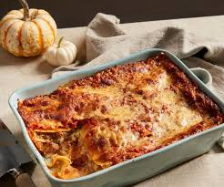

Lasagna

Description
Lasagna is a classic Italian dish featuring layers of pasta, a rich meat sauce, creamy béchamel, and melted cheese, creating a warm and comforting meal. The key to a flavorful lasagna is allowing the sauce to develop deep, rich flavors, complemented by the creamy texture of the béchamel. It’s perfect for gatherings and can be made in advance, making it a crowd-pleaser and a time-saver.
Ingredients
- Meat Sauce:
- 2 tbsp olive oil
- 1 large onion, finely chopped
- 2 cloves garlic, minced
- 800g ground beef (or a mix of beef and pork)
- 600g canned tomatoes, crushed
- 2 tbsp tomato paste
- 1 tsp sugar
- Salt and pepper to taste
- 1 tsp dried basil
- 1 tsp dried oregano
- Béchamel Sauce:
- 4 tbsp butter
- 4 tbsp all-purpose flour
- 3 cups milk
- Salt, pepper, and a pinch of nutmeg (optional)
- Lasagna Layers:
- 9-12 lasagna sheets
- 2 cups shredded mozzarella cheese
- 1 cup grated Parmesan cheese
- Fresh basil for garnish (optional)
Steps
- Prepare the Meat Sauce:
- Heat olive oil in a large skillet over medium heat. Add the onion and garlic, and cook until soft and fragrant, about 5 minutes.
- Add ground beef, breaking it up with a spoon, and cook until browned.
- Stir in the crushed tomatoes, tomato paste, sugar, salt, pepper, basil, and oregano. Let the sauce simmer for 20-30 minutes to deepen in flavor. Set aside.
- Prepare the Béchamel Sauce:
- In a saucepan, melt butter over medium heat. Add flour and whisk continuously until golden and smooth, about 2 minutes.
- Slowly pour in the milk, whisking to prevent lumps. Continue cooking and stirring until the sauce thickens, then season with salt, pepper, and nutmeg if desired.
- Assemble the Lasagna:
- Preheat your oven to 180°C (350°F). Spread a thin layer of meat sauce on the bottom of a 9x13-inch baking dish.
- Lay lasagna sheets over the sauce, then layer with more meat sauce, a few spoonfuls of béchamel, and a sprinkle of mozzarella and Parmesan.
- Repeat the layers until all ingredients are used, finishing with a layer of béchamel topped generously with mozzarella and Parmesan.
- Bake:
- Cover with foil and bake for 25 minutes. Remove the foil and bake for an additional 15 minutes, until the cheese is golden and bubbly.
- Let the lasagna rest for 10 minutes before slicing. Garnish with fresh basil if desired, and enjoy!